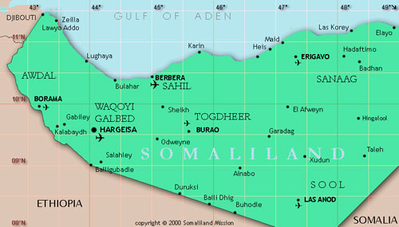
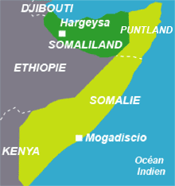

News
Suivez toute l'actualité du Somaliland et de l'association Somaliland-France.
Économie
Le Somaliland se rêve en hub de l'Afrique de l'Est
Malgré sa déclaration unilatérale d'indépendance de 1991, le Somaliland a un rêve : faire du pays le hub logistique de l'Afrique de l'Est.
Lire la suite →
Reportage
Somaliland (1/2) : Voyage en terre inconnue
Considérée comme un territoire fantôme, cette république autoproclamée se distingue pourtant par sa stabilité et ses orientations démocratiques.
Lire la suite →
Reportage
Somaliland (2/2) : L'économie et la question de la reconnaissance
L'économie du Somaliland repose sur l'agriculture, l'élevage et le soutien financier de la diaspora.
Lire la suite →